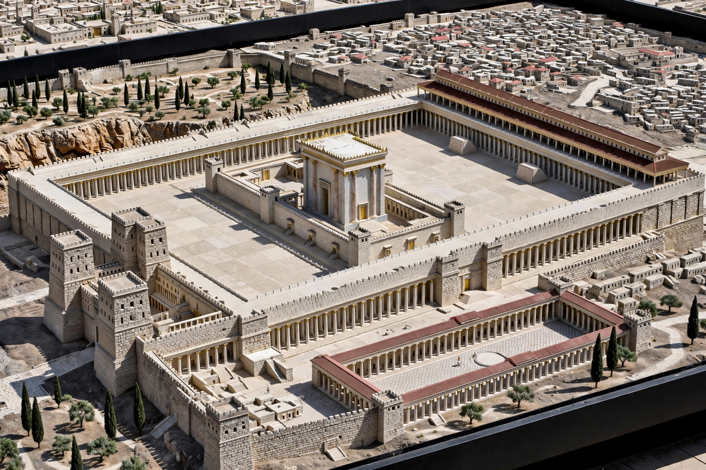

The Second Temple period in Jewish history lasted from 516 BCE to 70 CE, between the construction of the Second Temple in Jerusalem and its destruction by the Romans under Titus. The period spans Persian, Hellenistic, Hasmonean and Roman rule over Judaea, and is formative for both rabbinic Judaism and early Christianity: it saw the compilation of much of the Hebrew Bible, the rise of Jewish sects such as the Pharisees, Sadducees and Essenes, and the ministry of Jesus.
| Period | 516 BCE – 70 CE |
|---|---|
| Location | Judaea / Land of Israel |
| Key rulers | Persian Empire; Alexander the Great; Ptolemies and Seleucids; Hasmoneans; Herod the Great; Roman Empire |
| Major events | Return to Zion; Maccabean Revolt; Hasmonean kingdom; Herodian building programme; First Jewish–Roman War |
| Ends with | Destruction of the Second Temple, 70 CE |

After Cyrus the Great conquered Babylon in 539 BCE, Jewish exiles were permitted to return to Jerusalem. The Second Temple was completed in 516 BCE on the site of Solomon's Temple. Under Ezra and Nehemiah the Torah was promulgated as the law of the community, and Judaea (Yehud) remained a small temple-centred province of the Persian Empire.
Alexander the Great's conquests brought Judaea under Greek rule, first Ptolemaic and then Seleucid. Hellenistic culture spread through the eastern Mediterranean, and the Hebrew Bible was translated into Greek in the Septuagint. When Antiochus IV Epiphanes desecrated the Temple and suppressed Jewish observance, the Maccabean Revolt (167–160 BCE) erupted, led by Judah Maccabee and his brothers; the rededication of the Temple is commemorated by Hanukkah.
The Hasmonean dynasty combined the high priesthood with kingship, expanded Judaea's borders, and forcibly converted some neighbouring peoples. Internal strife between the sects of Pharisees and Sadducees weakened the kingdom, and rival claimants invited Roman intervention: Pompey captured Jerusalem in 63 BCE.
Herod the Great, installed as client king in 37 BCE, rebuilt the Temple on a monumental scale and constructed fortresses such as Masada, Caesarea Maritima, and the Antonia Fortress. After Herod's death the territory was fragmented and then placed under Roman prefects and procurators, including Pontius Pilate. Jewish sects and movements proliferated — Pharisees, Sadducees, Essenes (associated with the Dead Sea Scrolls at Qumran), and Zealots — and Christianity emerged from this milieu. Mounting tensions produced the First Jewish–Roman War (66–73/74 CE): Jerusalem and the Temple were destroyed in 70 CE, and the last fortress, Masada, fell in 73/74 CE.
The period's literature — including the Apocrypha, the Dead Sea Scrolls, Philo, and Josephus — is a principal source for Judaism and Christian origins. The loss of the Temple in 70 CE ended sacrificial worship and redirected Judaism toward synagogue, prayer and rabbinic interpretation, beginning at Yavneh.